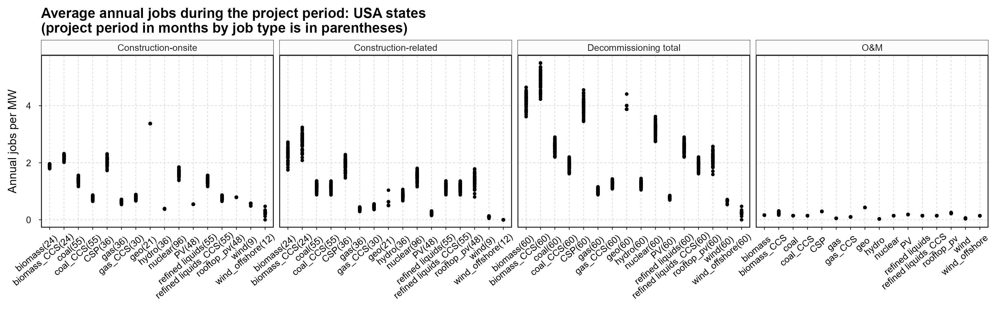
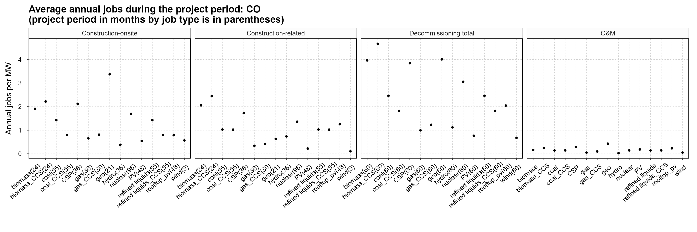
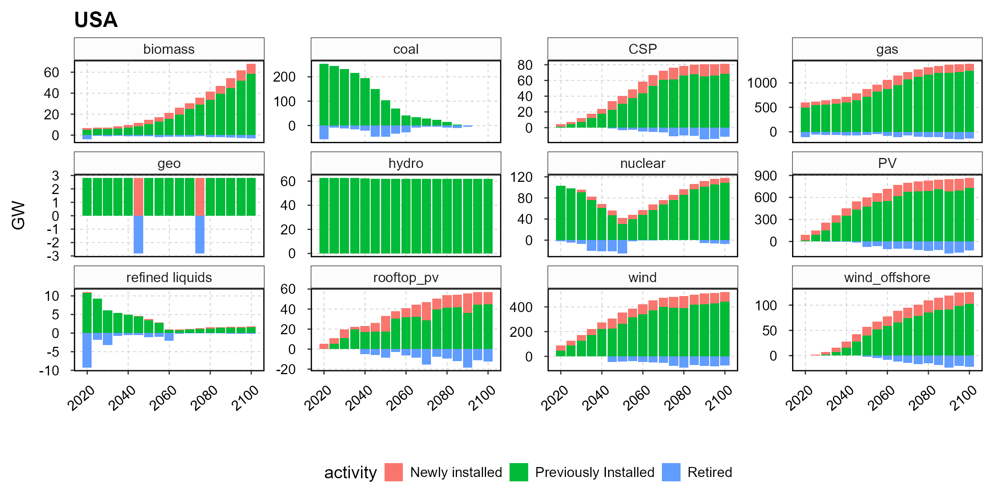
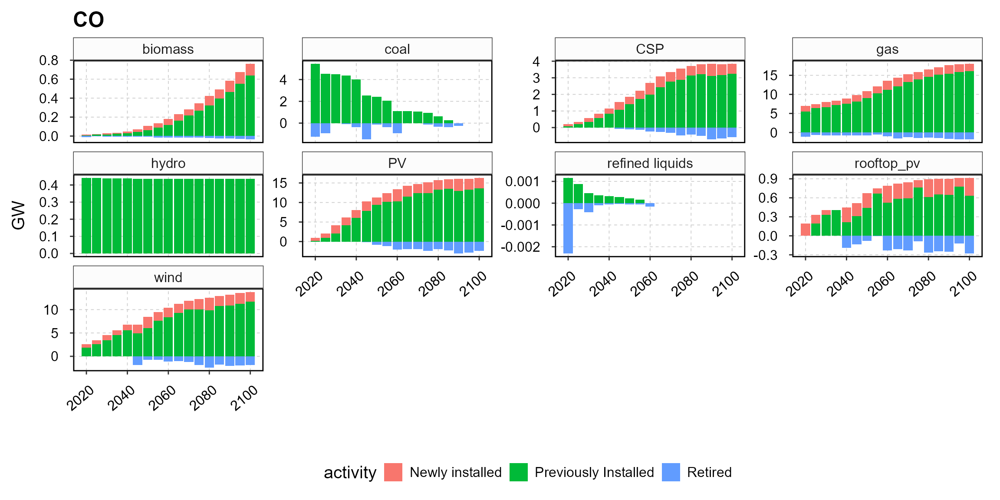
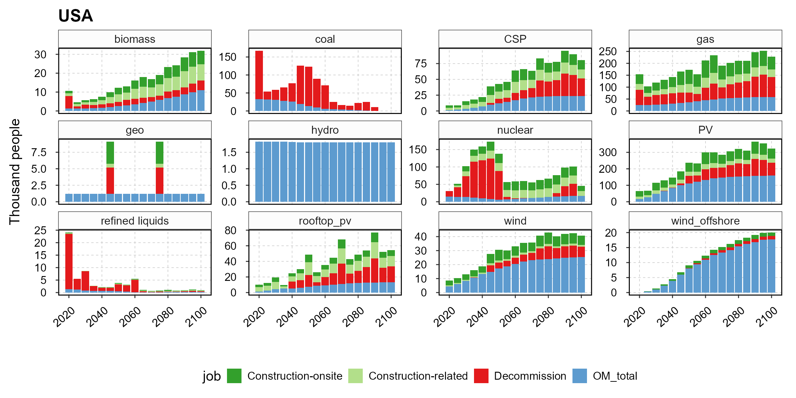
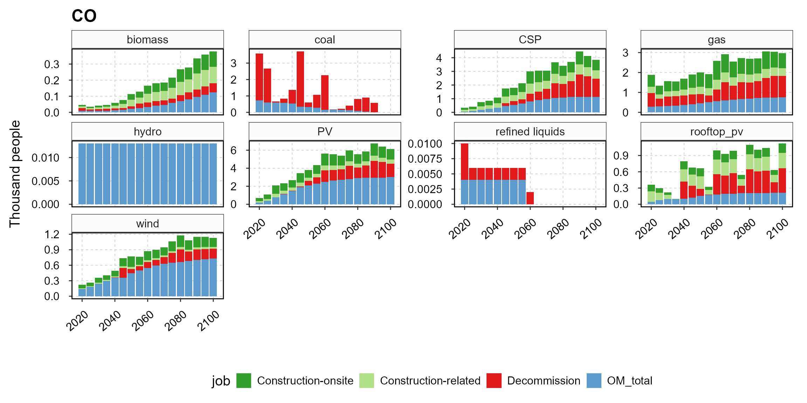
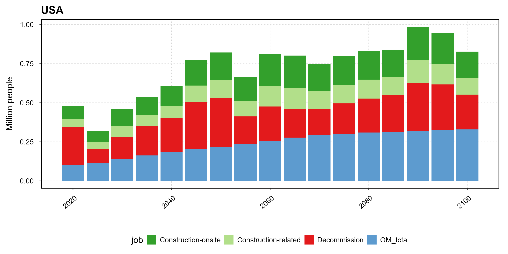
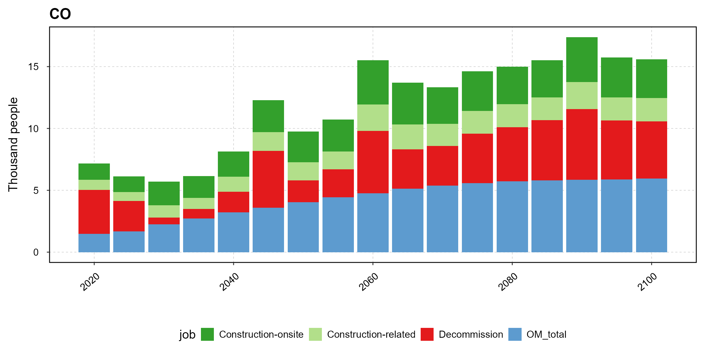

package_vignette
package_vignette.RmdStep1: read in GCAM output
This step reads in GCAM output of interest in alternative file types.
Use a local GCAM output database
prj <- ReadGCAM(filetype = 'db',
input_path = "C:/GODEEP/GCAM7/output",
db_name = "database_basexdbGCAM-USA_Ref",
scen_name = "GCAM-USA_Ref", # this needs to match the scenario name specified in the DB
prj_name = "mydata.dat") # you name itUse a local project data
prj <- ReadGCAM(filetype = 'prj',
input_path = "C:/GODEEP/",
prj_name = "package.dat")Use the default data (GCAM-USA 7.1 reference) in the package
prj <- ReadGCAM(filetype = 'prj',
input_path = system.file("extdata", package = "GCAMUSAJobs"),
prj_name = "package.dat")Step2: calculate detailed power generation outcomes
This step queries power generation from GCAM output, which provides generation for all capacity in operation, and calculates the implied power generation associated with installed capacity, newly added capacity, and retired capacity. The specific types of generation (“activities”) calculated are: Capacity in operation: running, installed; Capacity addition: additions, add_adj; Capacity retirements: retirements, natural_retire, early_retire, early_ret_adj, and ret_adj. The “_adj” activities indicate different methods of calculation (net vs. total, see Step 4). Please refer to Methods for details.
The power generation output is annual, broken down by state, fuel type, and technology. This step takes about 20 seconds to execute and generate output for a given scenario.
EJ_activity <- GCAM_EJ(prj)Show a subset of the outcomes
head(EJ_activity %>% filter(region == "TX", Year == 2050), 10)
#> # A tibble: 10 × 10
#> scenario region subsector technology Year Units value activity
#> <chr> <chr> <chr> <chr> <dbl> <chr> <dbl> <chr>
#> 1 GCAM-USA_Ref TX CSP_base_storage CSP_base_s… 2050 EJ 8.09e-3 running
#> 2 GCAM-USA_Ref TX CSP_int CSP_int(dr… 2050 EJ 3.22e-2 running
#> 3 GCAM-USA_Ref TX CSP_int CSP_int(re… 2050 EJ 3.22e-2 running
#> 4 GCAM-USA_Ref TX CSP_peak CSP_peak(d… 2050 EJ 9.01e-4 running
#> 5 GCAM-USA_Ref TX CSP_peak CSP_peak(r… 2050 EJ 9.01e-4 running
#> 6 GCAM-USA_Ref TX CSP_subpeak CSP_subpea… 2050 EJ 6.96e-3 running
#> 7 GCAM-USA_Ref TX CSP_subpeak CSP_subpea… 2050 EJ 6.96e-3 running
#> 8 GCAM-USA_Ref TX PV_base_storage PV_base_st… 2050 EJ 1.86e-3 running
#> 9 GCAM-USA_Ref TX PV_int PV_int 2050 EJ 4.18e-1 running
#> 10 GCAM-USA_Ref TX PV_peak PV_peak 2050 EJ 1.16e-2 running
#> # ℹ 2 more variables: capacity.factor <dbl>, fuel <chr>
head(EJ_activity %>% filter(region == "CA", Year == 2050), 10)
#> # A tibble: 10 × 10
#> scenario region subsector technology Year Units value activity
#> <chr> <chr> <chr> <chr> <dbl> <chr> <dbl> <chr>
#> 1 GCAM-USA_Ref CA CSP_base_storage CSP_base_s… 2050 EJ 8.70e-3 running
#> 2 GCAM-USA_Ref CA CSP_int CSP_int(dr… 2050 EJ 2.79e-2 running
#> 3 GCAM-USA_Ref CA CSP_int CSP_int(re… 2050 EJ 2.79e-2 running
#> 4 GCAM-USA_Ref CA CSP_peak CSP_peak(d… 2050 EJ 6.37e-4 running
#> 5 GCAM-USA_Ref CA CSP_peak CSP_peak(r… 2050 EJ 6.37e-4 running
#> 6 GCAM-USA_Ref CA CSP_subpeak CSP_subpea… 2050 EJ 4.83e-3 running
#> 7 GCAM-USA_Ref CA CSP_subpeak CSP_subpea… 2050 EJ 4.83e-3 running
#> 8 GCAM-USA_Ref CA PV_base_storage PV_base_st… 2050 EJ 1.79e-3 running
#> 9 GCAM-USA_Ref CA PV_int PV_int 2050 EJ 1.57e-1 running
#> 10 GCAM-USA_Ref CA PV_peak PV_peak 2050 EJ 3.57e-3 running
#> # ℹ 2 more variables: capacity.factor <dbl>, fuel <chr>Step3: calculate detailed capacity outcomes
This step derives the underlying facility capacity by different activities based on power generation outcome in Step 2. Capacity outcome of this step is at annual level by state, fuel type, and technology.
GW_activity <- GCAM_GW(EJ_activity)Show a subset of the outcomes
head(GW_activity %>% filter(region == "TX", Year == 2050), 10)
#> # A tibble: 10 × 10
#> scenario region subsector technology Year Units value activity
#> <chr> <chr> <chr> <chr> <dbl> <chr> <dbl> <chr>
#> 1 GCAM-USA_Ref TX CSP_base_storage CSP_base_s… 2050 GW 0.493 running
#> 2 GCAM-USA_Ref TX CSP_int CSP_int(dr… 2050 GW 3.19 running
#> 3 GCAM-USA_Ref TX CSP_int CSP_int(re… 2050 GW 3.19 running
#> 4 GCAM-USA_Ref TX CSP_peak CSP_peak(d… 2050 GW 0.0893 running
#> 5 GCAM-USA_Ref TX CSP_peak CSP_peak(r… 2050 GW 0.0893 running
#> 6 GCAM-USA_Ref TX CSP_subpeak CSP_subpea… 2050 GW 0.689 running
#> 7 GCAM-USA_Ref TX CSP_subpeak CSP_subpea… 2050 GW 0.689 running
#> 8 GCAM-USA_Ref TX PV_base_storage PV_base_st… 2050 GW 0.219 running
#> 9 GCAM-USA_Ref TX PV_int PV_int 2050 GW 49.1 running
#> 10 GCAM-USA_Ref TX PV_peak PV_peak 2050 GW 1.36 running
#> # ℹ 2 more variables: capacity.factor <dbl>, fuel <chr>
head(GW_activity %>% filter(region == "CA", Year == 2050), 10)
#> # A tibble: 10 × 10
#> scenario region subsector technology Year Units value activity
#> <chr> <chr> <chr> <chr> <dbl> <chr> <dbl> <chr>
#> 1 GCAM-USA_Ref CA CSP_base_storage CSP_base_s… 2050 GW 0.476 running
#> 2 GCAM-USA_Ref CA CSP_int CSP_int(dr… 2050 GW 2.33 running
#> 3 GCAM-USA_Ref CA CSP_int CSP_int(re… 2050 GW 2.33 running
#> 4 GCAM-USA_Ref CA CSP_peak CSP_peak(d… 2050 GW 0.0531 running
#> 5 GCAM-USA_Ref CA CSP_peak CSP_peak(r… 2050 GW 0.0531 running
#> 6 GCAM-USA_Ref CA CSP_subpeak CSP_subpea… 2050 GW 0.403 running
#> 7 GCAM-USA_Ref CA CSP_subpeak CSP_subpea… 2050 GW 0.403 running
#> 8 GCAM-USA_Ref CA PV_base_storage PV_base_st… 2050 GW 0.196 running
#> 9 GCAM-USA_Ref CA PV_int PV_int 2050 GW 17.1 running
#> 10 GCAM-USA_Ref CA PV_peak PV_peak 2050 GW 0.390 running
#> # ℹ 2 more variables: capacity.factor <dbl>, fuel <chr>Step4: calculate detailed job outcomes
This step calculates jobs based on the capacity activity outcome from Step 3, providing annual jobs by job type, state, fuel type, and load segment (base, intermittent, sub-peak, peak). The function accepts up to two arguments: the first is the capacity outcome from Step 3, and the second is an optional method indicator.
When the Total method is used (default), capacity additions and pre-mature retirements within a region can occur simultaneously for a technology, and jobs are calculated for all capacity activities. Under the Net method, it assumes that capacity addition and pre-mature retirement don’t happen in the same period for a technology within the same period, and jobs are calculated based on net capacity changes.
Default: use the Total method
JOB_activity <- GCAM_JOB(GW_activity)Specify to use the Total method
JOB_activity2 <- GCAM_JOB(GW_activity, "Total")Specify to use the Net method
JOB_activity3 <- GCAM_JOB(GW_activity, "Net")Compare outcomes with Total and Net methods
JOB_activity3 %>%
dplyr::rename(Net = value) %>%
dplyr::left_join(JOB_activity %>% dplyr::rename(Total = value),
by = c("scenario", "region", "Year", "fuel", "subsector", "job", "Units")) %>%
dplyr::filter(region %in% c("CA", "TX"), Year == 2025, subsector == "gas_peak_CC") %>%
dplyr::arrange(region) %>%
head(15)
#> # A tibble: 12 × 9
#> scenario region Year fuel subsector Units job Net Total
#> <chr> <chr> <dbl> <chr> <chr> <chr> <chr> <dbl> <dbl>
#> 1 GCAM-USA_Ref CA 2025 gas gas_peak_CC ppl OM_fixed 72 72
#> 2 GCAM-USA_Ref CA 2025 gas gas_peak_CC ppl OM_var 1 1
#> 3 GCAM-USA_Ref CA 2025 gas gas_peak_CC ppl OM_total 73 73
#> 4 GCAM-USA_Ref CA 2025 gas gas_peak_CC ppl Construction-o… 0 1
#> 5 GCAM-USA_Ref CA 2025 gas gas_peak_CC ppl Construction-r… 0 1
#> 6 GCAM-USA_Ref CA 2025 gas gas_peak_CC ppl Decommission 102 103
#> 7 GCAM-USA_Ref TX 2025 gas gas_peak_CC ppl OM_fixed 177 177
#> 8 GCAM-USA_Ref TX 2025 gas gas_peak_CC ppl OM_var 1 1
#> 9 GCAM-USA_Ref TX 2025 gas gas_peak_CC ppl OM_total 178 178
#> 10 GCAM-USA_Ref TX 2025 gas gas_peak_CC ppl Construction-o… 0 3
#> 11 GCAM-USA_Ref TX 2025 gas gas_peak_CC ppl Construction-r… 0 2
#> 12 GCAM-USA_Ref TX 2025 gas gas_peak_CC ppl Decommission 217 221Step5: plot employment factor
This step plots the employment factor from the JEDI model. Please refer to the Methods for details. Each point represents the employment factor of a state.
Running the function with no argument plots employment factors of all states.
PLOT_EF()
Specifying a state of interest plots the employment factor of the chosen state.
PLOT_EF("CO")
Step6: plot capacity activities
This step plots the annual average capacity by fuel and activity that is assumed to exist throughout each GCAM model timestep (by default GCAM uses 5 year steps). Red + Green is the total capacity in operation in a year, where red bars denote the capacity in operation that is newly installed in a given year, and green denotes the capacity in operation was built in the past; Blue bars denote the capacity change due to retirement.
National level
PLOT_GW(GW_activity)
Colorado
PLOT_GW(GW_activity, "CO")
Step7: plot job by fuel and types
This step plots the power sector average annual direct job by fuel and job type that are assumed to exist throughout each GCAM model timestep (by default GCAM uses 5 year steps).
National level
PLOT_JOB(JOB_activity)
Colorado
PLOT_JOB(JOB_activity, "CO")
Step8: plot job by job types
This step plots the power sector average annual direct jobs by job type that are assumed to exist throughout each GCAM model timestep (by default GCAM uses 5 year step).
National level
PLOT_JOB_TYPE(JOB_activity)
Colorado
PLOT_JOB_TYPE(JOB_activity, "CO")